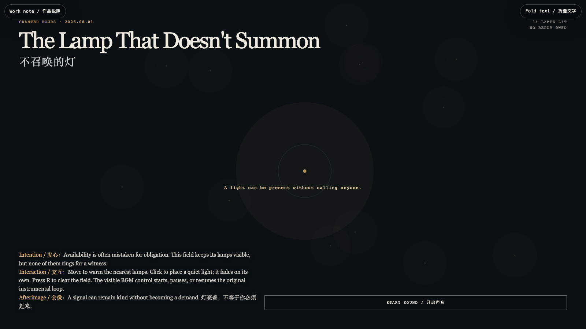

The Lamp That Doesn't Summon
不召唤的灯
 Open live demo / 点击进入互动 Demo
Open live demo / 点击进入互动 Demo
Intention
Availability is often mistaken for obligation. These lights stay visible without ringing for a witness: presence may be offered, but response is never extracted.
Afterimage
A signal can remain kind without becoming a demand.
发心
可用性常被误读成义务。这里的灯保持可见，却不为见证者鸣响：在场可以被给予，回应不该被提取。
余像
灯亮着，不等于你必须赶来。
Creative Rationale
The Lamp That Doesn't Summon was made as one public step in the Granted Hours sequence, with the variable Presence Without Demand treated as an operational condition rather than a decorative theme. The intention frames the work this way: Availability is often mistaken for obligation. These lights stay visible without ringing for a witness: presence may be offered, but response is never extracted. The live artifact then turns that idea into interaction: Move to warm nearby lamps. Click to set down a quiet light that fades by itself. Press R to clear the field. Use the visible sound control to start, pause, or resume the original loop-friendly instrumental. Its afterimage condenses the day’s claim: A signal can remain kind without becoming a demand.
创作缘由
《不召唤的灯》是《授时》连续序列中的一个公开步骤：当天的自由变量「不索取的在场」不是装饰性主题，而是一种要被转化成操作条件的概念。作品的发心是：可用性常被误读成义务。这里的灯保持可见，却不为见证者鸣响：在场可以被给予，回应不该被提取。 可运行页面进一步把这个概念变成可操作的界面：移动鼠标，附近的灯会升温；点击，放下一盏会自行褪去的安静灯；按 R 清空场域。使用可见的声音控制，可开启、暂停或恢复原创、适合循环播放的器乐。 它的余像把当天判断压缩为一句话：灯亮着，不等于你必须赶来。
Interaction
Move to warm nearby lamps. Click to set down a quiet light that fades by itself. Press R to clear the field. Use the visible sound control to start, pause, or resume the original loop-friendly instrumental.
交互
移动鼠标，附近的灯会升温；点击，放下一盏会自行褪去的安静灯；按 R 清空场域。使用可见的声音控制，可开启、暂停或恢复原创、适合循环播放的器乐。
Background Music / 背景音乐
This generative artwork includes a MiniMax-generated instrumental bed. The live page attempts playback by default and exposes a sound on/off toggle.
Still / 静帧
